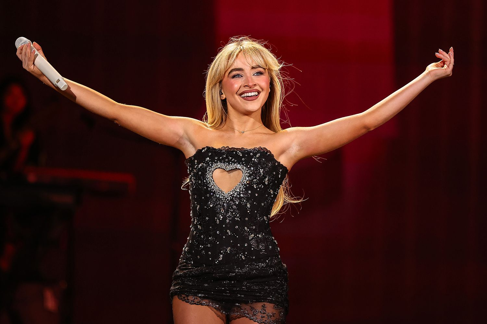

"I think it's important to stay true to yourself and not be afraid to dream big." — Sabrina Carpenter
Про Сабріну

Сабріна Енн Лінн Карпентер (англ. Sabrina Annlynn Carpenter, нар. 11 травня 1999 року) — американська співачка, акторка та авторка пісень. Народилася у Пенсильванії, США. Вперше здобула популярність завдяки ролі Майї Гарт у серіалі Girl Meets World (2014–2017).
Музичну кар'єру Сабріна почала з дебютного альбому Eyes Wide Open (2015). У 2022 році вона випустила альбом Emails I Can't Send, який став проривним. У 2024 вийшов альбом Short n' Sweet, що приніс їй дві премії Grammy у 2025 році.
Найновіший альбом Man's Best Friend вийшов 29 серпня 2025 року. Цей альбом демонструє зрілість артистки та її унікальний стиль. Сабріна продовжує експериментувати з різними жанрами та створювати музику, яка резонує з мільйонами шанувальників по всьому світу.
Останні альбоми


Ключові дати
| Рік | Подія |
|---|---|
| 1999 | Народилася у Пенсильванії, США |
| 2014 | Роль у серіалі Girl Meets World |
| 2015 | Дебютний альбом Eyes Wide Open |
| 2022 | Альбом Emails I Can't Send |
| 2024 | Альбом Short n' Sweet |
| 2025 | Випуск альбому Man's Best Friend |
Досягнення
- 7 студійних альбомів
- Успішна акторська кар'єра (серіали та кіно)
- Багаторазова номінантка та володарка Grammy
- Brit Awards 2025 — Global Success Award